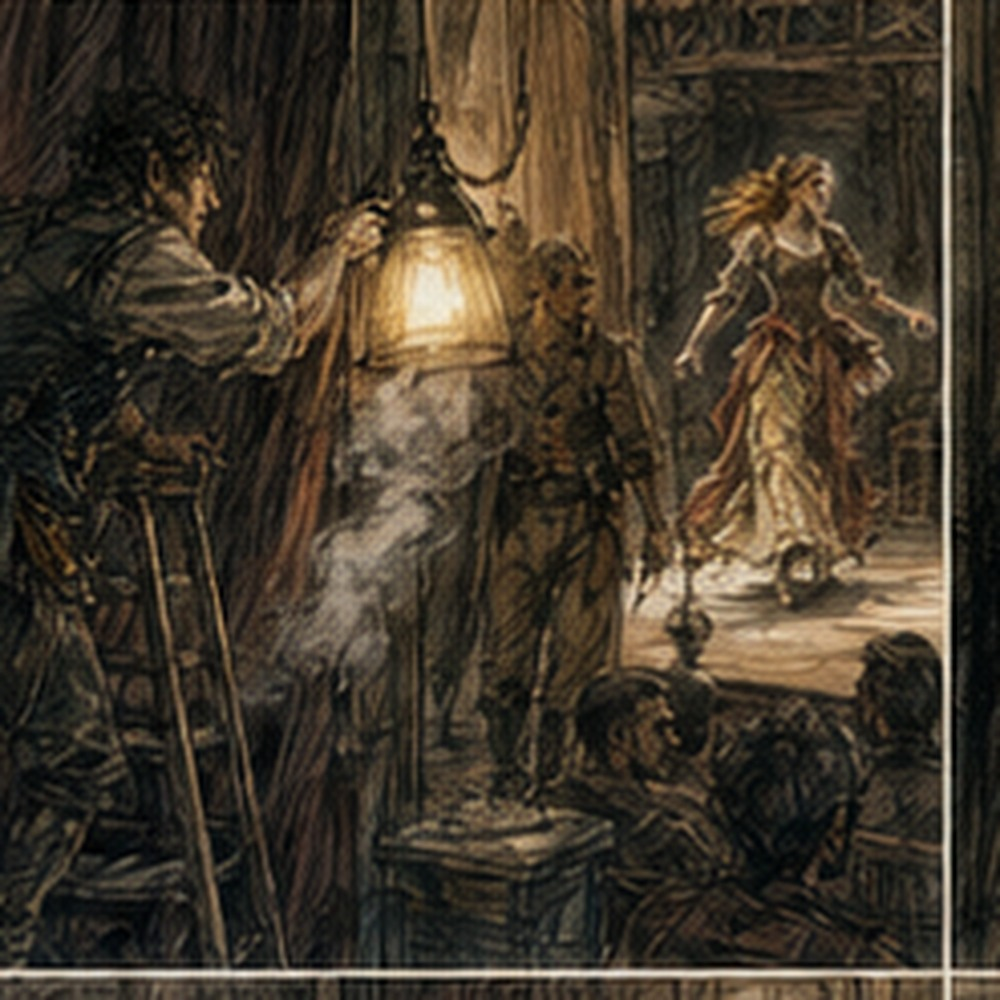
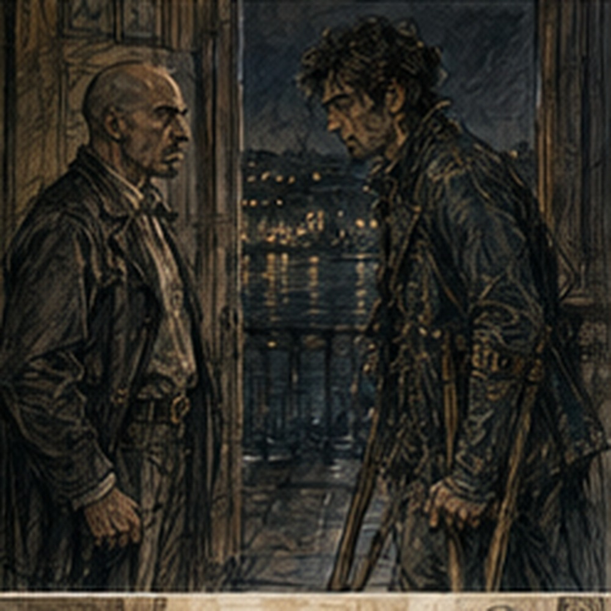

Three hours sounded like time until I watched theatre people use it. The broken chair disappeared. Costumes were repaired. People ate wherever there was space, slept wherever there was less noise, argued over objects, and kept moving.
My first show money was still in my pocket. I checked once. Then, annoyingly, once more.
Marek found me eating beans with pork and stole a piece.
"Rich man."
"No."
"Paid actor."
"Technically."
"After tonight, we go out."
"I am tired."
"So is everyone."
He looked tired too. The cut on his jaw had opened slightly. When I pointed it out, he touched it as though he had forgotten it existed. Then he fell asleep against the wall in less than a minute.
Serra returned later with fried food, gave pieces to Nessa and Rinna, kept one, and walked past me. I did not ask where she had been. Progress.
I found a quiet corner and sat. Iven joined me without speaking.
After a while he said, "Don't do the dead uncle."
"Why?"
"Because you want to."
"It worked."
"Exactly."
I disliked him.
"What are you going to say?"
"No idea."
"That is irresponsible."
He smiled without opening his eyes. "Paid actor."
Then Teren called him and the room started becoming a theatre again.
People who had eaten and people who had clearly begun drinking before arriving. Someone in the house sang three lines of a song until another person told him to shut up. Marek heard it backstage.
"Good crowd."
"That sounded terrible."
"Exactly."
Nessa finally abandoned the red dress. Not dramatically. She folded it. Put it in a trunk.
"Blue," she said.
Serra was already wearing blue.
"Excellent decision," Serra said.
Nessa stared at her. Serra left. The long box remained closed in the rear room. I had stopped thinking about it. Mostly. Teren moved through backstage.
"Places."

Again. No speech. No notes. No discussion of the afternoon. Marek had a small cup. I smelled it.
"That is not water."
"No."
"You said after."
"I said beer after."
"What is that?"
"Not beer."
He drank. I looked at Teren. Teren saw.
"Half?"
Marek showed the cup. Teren said, "Fine."
"That is allowed?"
Teren looked at me.
"Are you asking permission?"
"No."
"Good."
He left. Marek handed me the cup. I smelled it again. Sharp.
"No."
"New."
"I have to be a sword."
"Exactly."
I gave it back. Serra passed. She took the cup, drank, handed it to Marek, kept walking. I stared after her. Marek said, "Experienced."
"Apparently."
The doors shut. Second show. Same play. Not the same. I knew that before my first line. The audience laughed earlier. At entrances. At faces. At Marek walking like the King owned the floor. They liked Orin before he spoke. Somebody shouted something I could not make out. Orin answered, "Later." The house laughed. I waited at the wall opening. Serra began. Her Princess was faster tonight. Not happier. Sharper. She cut through Marek's first interruption without giving him space. My cue came. I spoke. Good. Next.
The pie line approached. I could feel it. She gave me almost the same setup. I said, "I am a legendary weapon, not---" Pie. I knew pie. Pie had worked.
"---luggage."
Nothing. Not nothing. One laugh. Fine. Why had I changed it? Because I had been afraid of repeating pie. That was just another way of thinking about pie. Fuck. Serra said, "You complain like luggage." The audience laughed. Of course they did. I said, "Luggage is carried with respect." More. We moved. Marek entered on time. This was somehow more difficult. I had prepared for him being wrong. He was correct. Serra said the actual line. I nearly missed it. Answered. Fine. The melting exchange never happened. No spoon.
No chamber pot. Gone. The scene took another road entirely because Marek said, "You belong to the crown." I said, "Which part?" He stopped.
"What?"
"The crown. Which part owns me?"
"All of it."
"That seems administratively difficult."
Small laugh. Marek said, "I am the administration." Serra made a noise. Not a line. A dismissive breath. The audience laughed harder at that than anything I had said. Marek turned toward her.
"Do you have something to add?"
"No."
Huge laugh. I could hear her smile. I could not see it. We continued. Later I spoke over her. Just once. I knew immediately. Could not take it back. She waited. Then said her line after mine as though I had interrupted her. Which I had. The audience understood the relationship as Sword being rude. Useful. Accidental. Not mine. Offstage, Serra said, "You stepped on me."
"I know."
"Good."
Then she was gone. That was the note. Shopkeeper came faster tonight. Or felt faster. Iven was awake now. Too awake. He entered carrying no purse. No coat either.
"What happened to your coat?"
That was my actual first line. He looked down at himself.
"Sold it."
"To pay me?"
"No."
"Then buy it back."
The audience laughed. Iven said, "You have a narrow understanding of commerce."
"I have a profitable understanding."
Nothing. Bad. Move. He said, "My aunt---"
"Yesterday you had an uncle."

He blinked. That was not in the play. The audience laughed. Iven said, "He died." More. I had walked directly into the dead uncle. He knew it. I knew it. The audience did not. I said, "Convenient."
"He would disagree."
"Then summon him."
"That costs extra."
I almost laughed. Iven had stolen Shopkeeper from me. Fine.
"Everything costs extra."
"There you are."
"What?"
"The man I was warned about."
"By whom?"
"My aunt."
"You just invented her."
Iven paused. Then smiled. The audience saw it.
"She is very new."
The room went. I waited. Not perfectly. Long enough.
Then:
"How much money does she have?"
More laughter. Good. We had found something. Not yesterday. Tonight. The constable entered on time. Correctly. Pointed at Iven. Nobody laughed. He delivered the line. Fine. Apparently competence was less funny. The scene moved toward its end. Then a shout came from the house.
"Arrest the shopkeeper!"
I stopped. Iven looked toward the voice. The constable looked at me. No. Do not. The audience began laughing before any of us spoke. I said to the constable, "Don't." He raised both hands.
"I learned."
Bigger laugh. Iven said, "Professional growth." I said, "Pay me." It landed harder than either previous time. Not because the line was better. Because everything before it had changed. Then we were out. Backstage, Iven grabbed my shoulder.
"Dead uncle."
"You forced it."
"You asked about the coat."
"You weren't wearing one."
"Exactly."
"I hate you."
"Good show."
It was. Not perfect. Not even close. But good. The night crowd gave more and took more. They talked. They shouted. They laughed over lines. Marek played with them until Teren hissed, "Scene," from the wing. Orin ignored a shouted suggestion completely. Serra answered one.
A local worker had to replace a lamp during a scene because it began smoking. The actress nearest it crossed downstage without being told, changing the whole picture while the worker reached behind the curtain. Nobody stopped. The replacement chair survived. Marek looked disappointed. During Orin's death, someone in the audience shouted, "Again!" Orin, lying dead, lifted one finger. The room exploded. Backstage afterward he said, "Animals." But he was smiling. Near the end, fatigue arrived all at once. Not just mine. Everyone. Lines got shorter. People stopped adding.
Marek stopped playing with the audience. Serra's Princess became almost severe. Iven missed a word and did not bother repairing it because nobody needed it. I understood that now. Not every missing thing needed rescue. Only the things holding something else up. The final scene came. Then applause. Louder. Night people. We bowed. Someone shouted for chamber pot. Serra looked at me. I looked at her. She bowed again. Nothing else. Good. Backstage became noise. Real noise. Not work noise. Different. We were still working, but the edge had broken.
Someone opened a bottle before Teren paid anyone. Nessa said, "Away from the costumes." The bottle moved six feet. Apparently sufficient. Teren appeared with the purse.
"Pay."
Again everyone materialized. My second payment felt less strange. Still good. Teren put the coins in my hand.
"Gregory."
"Thank you."
He had already called the next name. I moved before being told. Improvement. Marek appeared.
"Money."
"Yes."
"Twice."
"Yes."
"Beer."
I looked around. Pell was sitting on the floor with his back against a trunk, eyes closed. Nessa had the red dress in her lap again. Rinna was counting something on her fingers with a local woman. Davin was nowhere. Iven was drinking from the bottle.
Orin was arguing with someone from the audience through the backstage door about whether dead men could hear requests. Serra had disappeared. Teren was still paying people. I was exhausted. My shoulders hurt. My hands were tired. My shirt smelled terrible. I had money in my pocket. More money than I had this morning. For two shows. Tomorrow--- I did not know what tomorrow was. That felt important. Marek put an arm around my shoulders. I nearly hit him with a crutch.
"Careful."
"Beer."
"I heard you."
"Then move."
"Where?"
He grinned.
"Outside."
We went. The street beyond the hall was dark except for lamps, windows, and the river reflecting pieces of both. People from the show were still outside talking. A woman called Marek's name. He called hers back. I did not know her. Someone grabbed Orin from behind and nearly got elbowed. Iven came out carrying the bottle. Pell did not. Nessa definitely did not. Teren was still inside. Davin was probably fixing something because Davin was always fixing something. Serra was nowhere I could see. Marek pointed downriver.
"First one."
"What?"
"Drink."
"There are three taverns."
"Yes."
"Which one?"
"Yes."
I laughed. Then followed him. Celebration, apparently, had arrived.